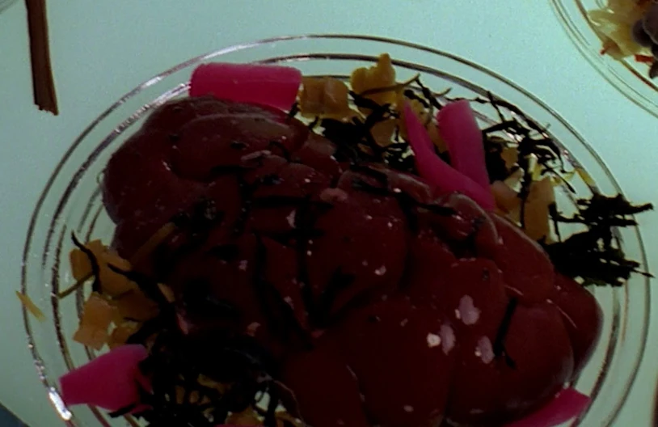

How to Prepare Heart of Targ

Description
Welcome to the world of Klingon cuisine, where bold flavors and hearty dishes reign supreme.
Today, we bring you a recipe that embodies the essence of Klingon culture and culinary traditions, the legendary "Heart of Targ." This revered dish combines the strength of the Klingon warriors with the rich flavors of the Klingon homeworld.
Prepare yourself for a culinary adventure unlike any other as we delve into the heart of Klingon gastronomy.
Ingredients
- 1 whole Targ heart
- 3 cups bloodwine
- 6 Klingon fire peppers, finely chopped
- 4 Klingon blood onions, thinly sliced
- 8 cloves of garlic, minced
- 1 cup gagh worms (optional, for added texture)
- 2 tablespoons bI'rel spice blend (a mixture of blackened tree bark, pulverized zilm'kach insect shells, and ground petaQ horn)
Steps
- Clean the Targ heart thoroughly, removing any excess fat or connective tissue. Rinse it under cold water and pat it dry with a clean cloth.
- Marinate the Targ heart in bloodwine for at least 4 hours to enhance the flavor and tenderize the meat. Ensure the heart is fully submerged.
- In a large, heavy-bottomed pot, heat a generous amount of bloodwine over high heat until it begins to simmer. Add the chopped fire peppers and blood onions, stirring occasionally.
- Once the onions have softened and the peppers have released their fiery essence, add the minced garlic to the pot. Stir and cook for another minute or until the garlic becomes fragrant.
- Carefully remove the Targ heart from the marinade, reserving the liquid for later use. Place the heart in the pot with the vegetables, and sear it on all sides until a rich, caramelized crust forms.
- Reduce the heat to medium and pour in the reserved marinade, along with any remaining bloodwine. Add the gagh worms, if desired, and sprinkle the bI'rel spice blend over the mixture.
- Cover the pot and allow the Heart of Targ to simmer for approximately 2-3 hours, or until the meat is tender and the flavors have melded together beautifully.
- Once the dish is fully cooked, remove the Heart of Targ from the pot and let it rest for a few minutes before slicing it into thick, succulent pieces.
- Serve the Heart of Targ on a bed of steaming hot gagh worms or alongside a plate of savory rokeg blood pie. Garnish with a sprinkling of fresh blood onion slices for an added burst of flavor.
- Prepare to indulge in the true essence of Klingon cuisine as you savor the Heart of Targ, a dish that celebrates bravery, honor, and the unyielding spirit of the Klingon Empire.
Closing
Qapla'! (Success!)